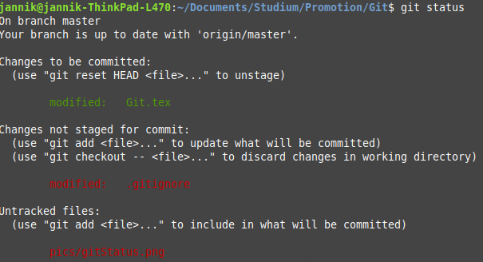
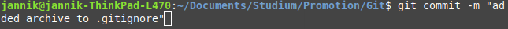
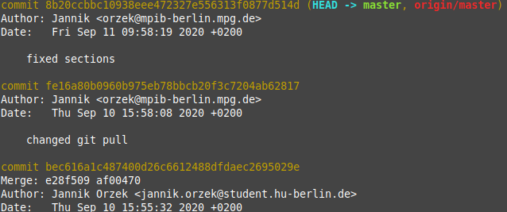
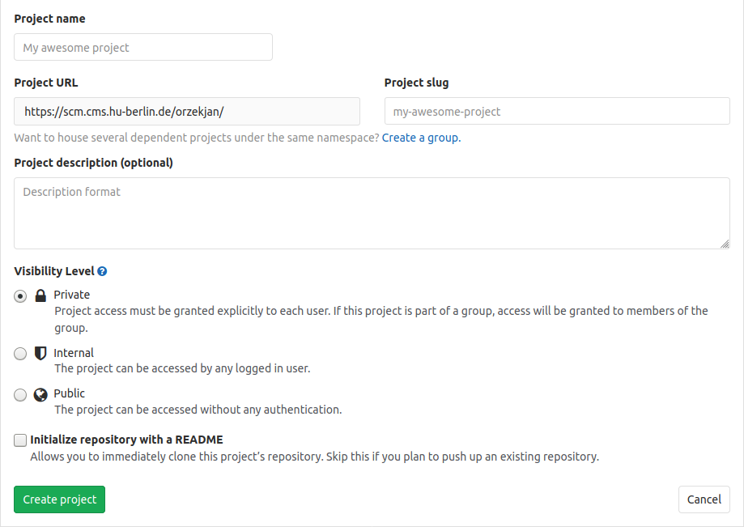
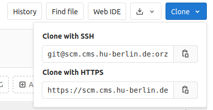
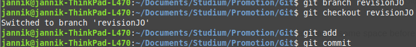
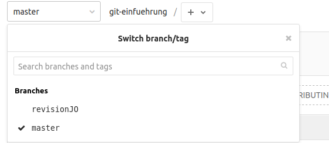
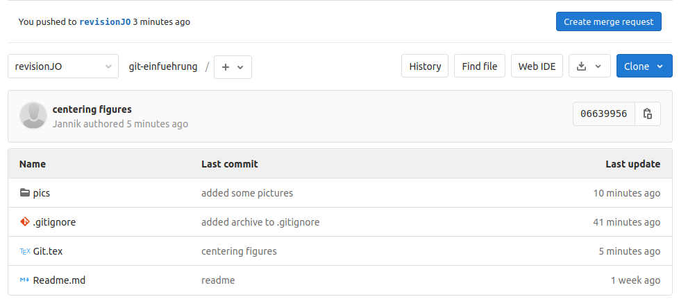
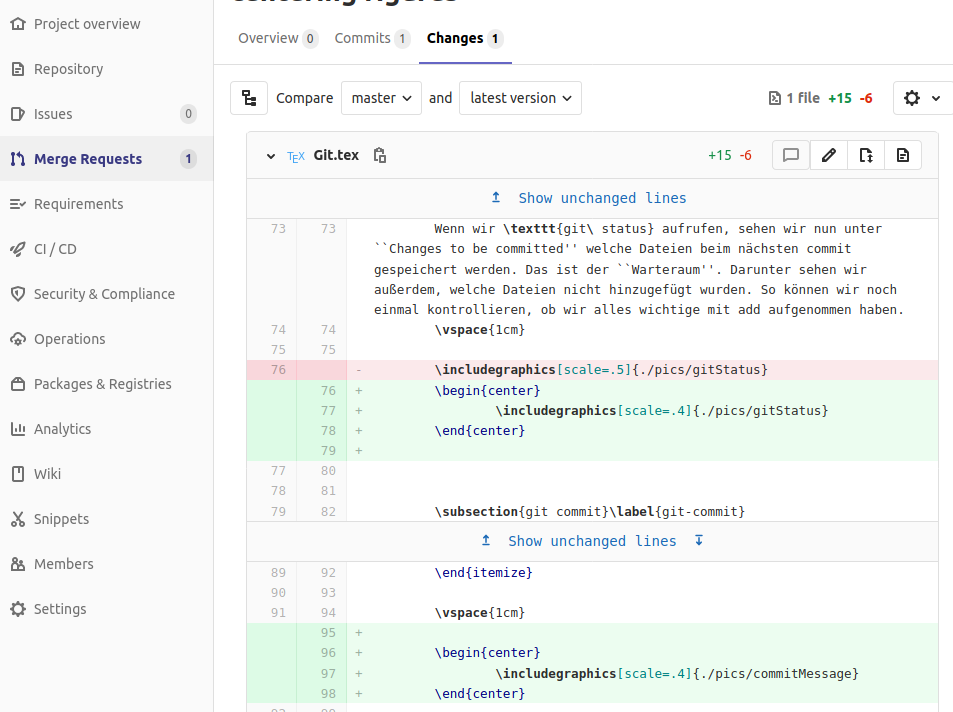
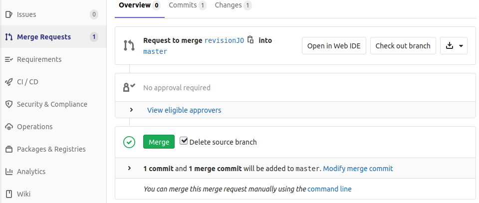

13 Git und GitLab
13.1 Git
Git ist ein Programm zur Versionsverwaltung von Dateien. Das bedeutet, dass wir damit nachverfolgen können, wie sich Dateien über die Zeit verändert haben. Außerdem können wir auch sehen, wer sie verändert hat und wir können zu früheren Zuständen des Dokuments zurückkehren. Es gibt viele unterschiedliche Systeme zur Versionsverwaltung, aber git ist das am weiten verbreitetste und auch die Grundlage für zum Beispiel gitHub und gitLab. Git ist kostenlos für Windows, Mac und Linux verfügbar. Weitere Informationen zur Installation gibt es hier.
13.2 Einführung in Git
Wir werden im Folgenden alle Befehle in der command line durchführen. Es gibt sehr viele unterschiedliche grafische Oberflächen für git, die einem das Leben erleichtern können. Aber wenn wir online nach Hilfe für git suchen, werden wir immer auf die command line Befehle stoßen und daher wollen wir uns hier auch nur mit diesen beschäftigen.
13.2.1 Schritt 0
Wir wollen git als erstes sagen, wer wir sind. Das ist wichtig, damit später jeder nachvollziehen kann, wer was am Dokument verändert hat. Hierfür nutzen wir den git config Befehl.
git config --global user.name Mein Namegit config --global user.email MeinName@mail.com
13.2.2 git init
Der erste Schritt ist, git zu sagen, dass wir eine Versionskontrolle starten wollen. Hierfür gehen wir zuerst in den Ordner, in dem die Dateien liegen, die wir “nachverfolgen” wollen. Dort starten wir dann die Kommandozeile und geben den Befehl git init ein (init steht für initialize). Git erstellt nun einen .git-Ordner, der aber nur sichtbar ist, wenn wir verborgene Ordner im Betriebssystem anzeigen lassen. Diesen brauchen wir aber im Folgenden nicht; es macht also nichts, wenn ihr ihn bei euch nicht sehen könnt.
13.2.3 git add
Sobald wir git init ausgeführt haben, können wir Dateien zur Versionskontrolle hinzufügen. Hierfür geben wir den Befehl “git add” gefolgt vom Name der Datei ein. Z.B. git add gitTutorial.tex. Die Datei “gitTutorial.tex” wird nun in eine Art “Warteraum” aufgenommen. Man spricht hier von “staged”. Wichtig ist: Wir haben die Datei so noch nicht in git zur Nachverfolgung hinzugefügt! Dateien aus Unterordnern können wir über die relativen Pfadnamen hinzufügen (z.B. figures/git/gitLogo.png). Mit git add . werden alle Dateien im Ordner sowie in allen Unterordnern hinzugefügt. Wir können auch eine .gitignore-Datei anlegen, in der wir festlegen, welche Dateien oder Dateitypen nicht zur Nachverfolgung hinzugefügt werden sollen. Diese können wir in einem Texteditor erstellen und dann unter .gitignore im Ordner speichern
- Hinweis: Wenn wir versehentlich eine Datei in den “Warteraum” aufgenommen haben, können wir sie mit z.B. mit
git rm --cached gitTutorial.texwieder entfernen
Beispiel für Inhalte einer .gitignore Datei:
# Dateien mit folgenden Dateiendungen werden nicht nachverfolgt:
.log
.aux
.pdf
.gz
.out
# Dateien aus dem Unterordner archive werden nicht nachverfolgt
/archive13.2.4 git status
Wenn wir git status aufrufen, sehen wir nun unter “Changes to be committed” welche Dateien beim nächsten commit gespeichert werden. Das ist der “Warteraum”. Darunter sehen wir außerdem, welche Dateien nicht hinzugefügt wurden. So können wir noch einmal kontrollieren, ob wir alles wichtige mit add aufgenommen haben.

13.2.5 git commit
Der wichtigste Befehl ist git commit: Mit commit halten wir die aktuelle Version aller Dateien aus dem “Warteraum” fest. Man macht hier also im Prinzip einen Schnappschuss der Dateien im aktuellen Zustand. Zu diesen Zuständen kann man dann immer wieder zurückkehren, wenn man einen Fehler gemacht hat oder schauen möchte, was sich seither verändert hat. Wenn man git commit eingibt, wird man dazu aufgefordert, auch eine commit message zu schreiben. Hier sollte eine Beschreibung der Veränderungen seit dem letzten commit eingetragen werden. Die Beschreibung speichert man mit [Strg + S] und schließt das Fenster mit [Strg + X].
- Hinweis: Unter Windows muss man zuerst
iklicken, bevor man eine commit message schreiben kann. Nach dem Eingeben der commit message mitEscden Bearbeitungsmodus schließen und :wq eingeben, um das Fenster zu schließen. - alternativ kann man auch
git commit -m Dies ist meine commit messageeingeben; dann öffnet sich kein neues Fenster für die commit message.

13.2.6 git log
Mit git log erhaltet ihr eine Übersicht aller commits. Hier können wir auch den “Namen” des commits sehen (die sogenannten Hash-Werte).
Z.B. d3e1166c891c21ee78dcaf6c7484eaf443957435. Diese brauchen wir, wenn wir zu einem früheren Zustand zurück kehren wollen.

13.2.7 Zu einem früheren Zustand zurückkehren
Um zu einem früheren Zustand zurückzukehren, müssen wir zuerst im log den Hash-Wert des Commits heraussuchen, zu dem wir zurück wollen (z.B. d3e1166c891c21ee78dcaf6c7484eaf443957435). Mit git checkout d3e1166c891c21ee78dcaf6c7484eaf443957435 können wir dann zu diesem Commit zurückkehren. Dabei werden alle Dateien auf den Zustand zurück gesetzt, den sie im Commit d3e1166c891c21ee78dcaf6c7484eaf443957435 hatten. Wichtig: Dabei werden die neueren Commits nicht überschrieben! Wir können immer wieder zur aktuellsten Version zurückkehren (mit git checkout master).
13.2.8 Branches
Branches sind dann wichtig, wenn wir verschiedene Versionen eines Dokumentes ausprobieren wollen. Zur Zeit befinden wir uns auf dem “master” branch und alle Veränderungen, die wir commiten, landen in diesem master branch. Wenn wir größere Veränderungen an einem R-Skript oder einem Dokument vornehmen, das wir auch mit anderen teilen, kann das aber problematisch sein. Damit wir uns nicht immer den master “zerschießen” können wir branches (also Ableger) nutzen. Um einen solchen branch zu erstellen, geben wir git branch Branchname ein. Wir können zwischen dem master und dem neuen branch mit git checkout Branchname wechseln. Wenn wir wieder zum master zurück wollen, geben wir git checkout master ein.
Hinweise:
- Wenn man einfach nur
git brancheingibt, bekommt man eine Übersicht über alle existierenden branches. Git markiert außerdem, welcher Branch gerade angezeigt wird. - Wenn man ein Dokument verändert, aber nicht commitet hat, kann man den branch nicht wechseln. Andernfalls würde man alle Veränderungen verlieren
13.2.9 Mergen
Nachdem wir alle Änderungen in einem branch vorgenommen haben, wollen wir nun unseren neuen branch und den master vereinen (merge). Hierfür gehen wir wieder in den master (git checkout master). Dort geben wir nun git merge Branchname ein. Das kann z.B. auch genutzt werden, wenn eine andere Person an unserem Manuskript weiter geschrieben hat und wir nun diese Veränderungen in unser Dokument übernehmen wollen. Dabei schaut Git auch, ob mehrere Personen die selben Textstellen verändert haben. In solchen Fällen kommt es zu einem merge conflict. Git wird versuchen, diese Konflikte zu lösen, aber manchmal müssen wir auch selbst Hand anlegen. Weiter unten wird erklärt, wie man mit merge Konflikten in GitLab umgeht.
13.3 GitHub, GitLab, GitBucket, …
GitHub, GitLab, GitBucket und ähnliche Plattformen sind Webseiten, auf denen wir unser git-Projekt hochladen können, um es anderen zur Verfügung zu stellen oder ein Backup zu haben. Wir werden im Folgenden die HU-eigene GitLab Instanz nutzen. Wichtig: In GitLab können wir Projekte auch so speichern, dass nur wir selbst oder von uns ausgewählte Personen auf die Dokumente Zugriff haben!
13.3.1 Ein neues Projekt erstellen
Auf GitLab können wir unter “New Project” eine neues Projekt erstellen. Hier können wir auch einstellen, ob ein Projekt nur für uns oder für alle sichtbar sein soll.

Nachdem wir ein neues Projekt erstellt haben, können wir unser bestehendes git-Projekt hochladen. Die hierfür notwendigen Schritte werden nach dem Erstellen eines neuen Projektes direkt in gitLab angezeigt. Sie sind: git remote add origin https://scm.cms.hu-berlin.de/Nutzername/Projektname.git git push -u origin master
- remote steht für ein repository, das nicht auf dem eigenen Rechner liegt.
git remote add originfügt also ein neues remote repository hinzu, dasoriginheißt und inhttps://scm.cms.hu-berlin.de/Nutzername/Projektname.gitliegt. Nachfolgend müssen wir nicht mehr die ganze Web-Adresse schreiben, sondern es reicht der Name des remote repository (origin). Wir können das remote repository auch anders nennen (z.B.git remote add GitLabRemote https://scm.cms.hu-berlin.de/Nutzername/Projektname.git). Aber origin hat sich als Standard durchgesetzt. git push -u origin masterlässt sich übersetzen als: lade (git push) den lokalen master in das remote repository mit dem Namen origin. Dabei wird im remote repository ebenfalls der master überschrieben.- Wenn wir ein gemeinsames Projekt erstellen, können wir andere Personen auf GitLab gezielt zum Projekt hinzu fügen und ihnen bestimmte Rollen zuordnen. Mehr Infos zu den Rollen und ihrer Bedeutung gibt es hier.
13.3.2 git clone
Häufig wollen wir an einem Projekt einer anderen Person weiterarbeiten. Hierfür laden wir das Projekt erst einmal herunter. Zuerst gehen wir in den Ordner, in dem wir das git-Projekt speichern wollen. Dann führen wir dort in der command-line den folgenden Befehl aus: git clone https://scm.cms.hu-berlin.de/orzekjan/git-einfuehrung.git
Git lädt nun das Projekt “git-einfuehrung” herunter und wir können es lokal bearbeiten. Dabei sollten wir zuerst einen neuen Branch erstellen. So können wir sicherstellen, dass wir Veränderungen im Projekt, die von einer anderen Person im origin vorgenommen werden, leichter mit unseren Veränderungen integrieren können.
- Um den Link zum Herunterladen eines Projekts zu finden, kann man auf der Projektseite auf Clone drücken und den HTTPS Link kopieren.
- den lokalen branch zur Bearbeitung erstellen wir wie oben: z.B. mit
git branch revisionJO.


13.3.3 git push
Nachdem wir ein Repository herunter geladen und verändert haben, können wir es mit git push wieder auf den Server laden. Wenn es sich um ein gemeinsames Projekt handelt, sollte man nicht direkt in den master pushen; sonst überschreibt man eventuell Veränderungen, die andere vorgenommen haben. Stattdessen sollte man den eigenen branch (im Beispiel den branch revisionJO) in einen neuen remote branch pushen. Dies geht mit dem Befehl:
git push origin revisionJO
Der lokale branch revisionJO wird so in das online-Projekt kopiert. Dort gibt es nun ebenfalls einen branch mit dem Namen revisionJO. Wenn der Branch mit diesem Namen bereits vorher existierte, wird er nur aktualisiert.

Bei unseren eigenen Projekten können wir auch direkt in den Master pushen. Das geht mit git push origin master.
In GitLab können wir nun zu unserem branch wechseln und mit “Create merge request” ein Zusammenführen des masters und des revisionJO-branches anfragen.

Hier können wir auch noch einen ausführlicheren Kommentar hinterlassen, warum wir eine Veränderung vorgenommen haben.
Alle Veränderungen werden im Reiter “Changes” detailliert aufgeführt:

Im Reiter “Overview” können Projektadministrator_innen nun den Merge annehmen und unsere vorgeschlagenen Veränderungen damit übernehmen oder ablehnen. Außerdem können dort die Veränderungen auch noch einmal diskutiert werden.

13.3.4 git pull
Mit pull können wir unser git repository vom Server auf den Rechner aktualisieren. Wir können dabei festlegen, welchen branch wir herunterladen wollen. Z.B. laden wir mit
git pull origin master
den branch master aus dem Online-Projekt origin herunter. So können wir nach dem merge sicherstellen, dass wir auch wieder die aktuelle Version des master haben.
13.3.5 Branches archivieren und löschen
Nachdem man den branch revisionJO in den master gemerged haben, ist üblich, den alten branch zu löschen. So vermeidet man, am Ende sehr viele branches zu haben, die alle nicht mehr genutzt werden. Den branch revisionJO löscht man mit:
git branch -d revisionJO
Wenn man den branch vorher archivieren möchte, geht dies mit:
git tag archive/revisionJO revisionJO
So wird ein Ordner archive erstellt, in dem der branch revisionJO gespeichert ist. Wir können den branch nun löschen, aber er ist weiterhin im Ordner archive hinterlegt. Um alle tags anzuzeigen, können wir einfach git tag eingeben. Dort sehen wir nun auch den neu angelegten archive Ordner.
Um den branch revisionJO wieder herzustellen, können wir git checkout -b revisionJO archive/revisionJO eingeben.
13.4 Weitere Ressourcen
Einfache Einführung: Git & GitHub Crash Course For Beginners